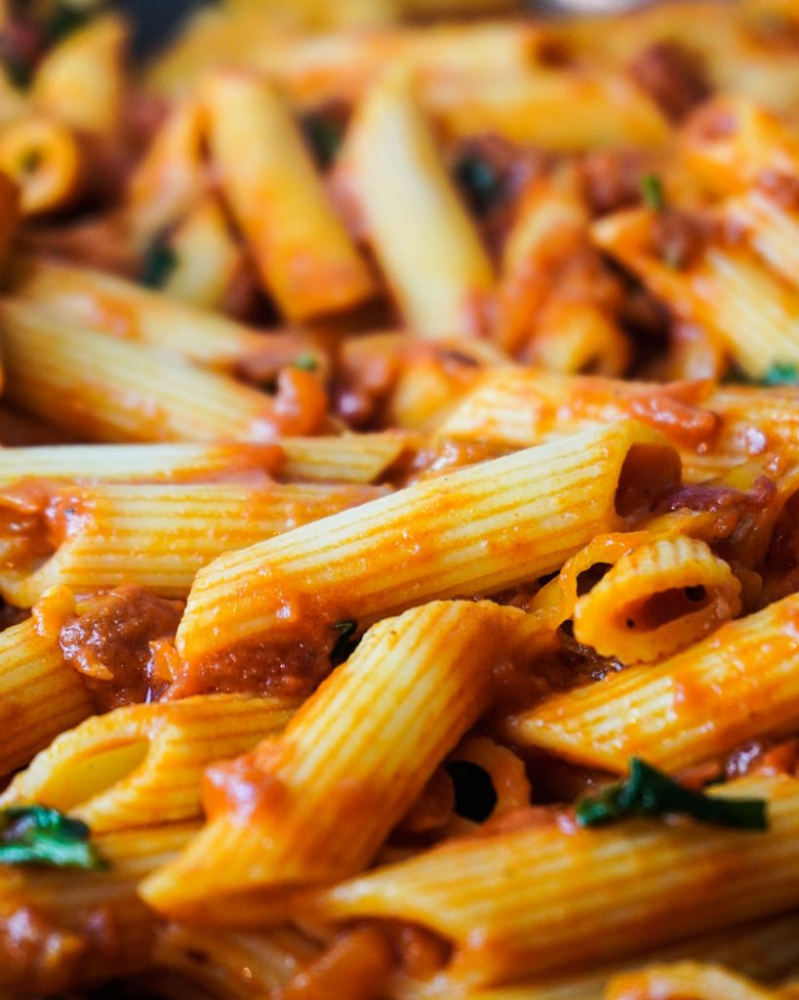

Penne all' Arrabiata

Beschreibung
Vegane Penne all' Arrabiata
Zutaten
- 400g Penne
- 4 EL Öl
- 1 Zwiebel
- 2 Knoblauchzehen
- 2 EL Tomatenmark
- 800ml Tomaten (in Stücken)
- 1 TL Chili
- 1 TL Salz
- 1/2 TL schwarzer Pfeffer
- 1/2 TL Paprikapulver Edelsüß
- 70g Peperoni
- 3 EL Hefeflocken
- 1 Handvoll Petersilie
Schritte
- Öl, Zwiebel, Knoblauchzehen, Paprikapulver, Tomatenmark und Chili in eine Pfanne oder einen Topf geben und für ca. 6-8 Minuten auf mittlerer Hitze braten.
- Peperoni, schwarzen Pfeffer und Salz dazugeben und für weitere 2 Minuten braten.
- Mit Tomaten ablöschen, Hefeflocken dazugeben und für 20 Minuten einkochen. In der Zwischenzeit die Penne in einem separaten Topf kochen.
- Petersilie sowie Penne in die Pfanne dazugeben und gut mit einander vermischen.
- FERTIG!